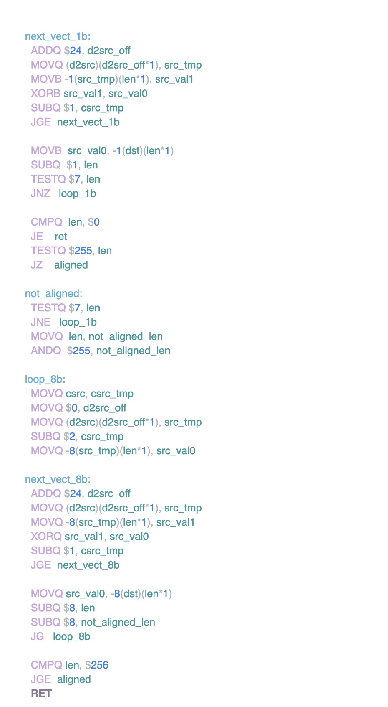

Go & Assembly尽管 Go 是一门很年轻的语言，但如果想要深入了解其 runtime， 标准库实现等细节，网上会有大把的资料可以参阅。如果是想了解更多偏实践的内容，那学习材料就更数不胜数了。这些问题也是大家平时关注最多的。可我为什么偏偏要讲汇编呢？而且还是 Go 的汇编？ Go & Assembly, why?首先我们来谈谈汇编。通过汇编，我们可以揭开很多计算机世界的神秘面纱，比如了解 CPU 的指令执行，了解编译器的优化，了解一些算法的设计原理等等。光这几点就足以让不少人感到兴奋了。 那么为什么选择 Go 语言的汇编呢？原因非常简单直接： Go 几乎是汇编入门最简单的语言。我来解释一下为什么下这样一个结论：
作为一名工程师，我对 Go 汇编最大的兴趣在如何利用汇编优化我的代码，这也是本文的中心，即 “利用 Go 汇编进行算法加速”。 Hello Bombs!!!为了不落窠臼，让我们从 “Hello Bombs!!!” ，而不是 “Hello world!” 来入手 Go 汇编。废话不多说，先上源码( MacOS): 为了调用 Hello 这个函数，我们还需要对它做一个函数申明： 现在，我们就可以调用 Hello 函数，输出 “Hello Bombs!!!” 了。 其实上面的汇编代码的意义非常简单：
然而，这么简单的事情用汇编做实在令人脑壳生疼。这也绝不是我们学习汇编的最终用途，因此我也不在汇编函数的细节中纠缠了，更多的注意事项可以参阅 Go 的官方文档。 我这里放一个 “Hello Bombs!!!” 主要是让大家体味一下初恋的感觉——被炸弹炸洗礼过一般 :D 二十行代码打败标准库memmove 在 Go 中相当的重要，比如 copy 函数实际上就是 memmove 的封装。如果我们看其实现，会发现洋洋洒洒的 500 多行汇编代码，一看就很高级，一看就很极致，当然没什么人会坚持去看第二眼。 继续先上代码： 算上空行，刚好 20 行。 这是 copy 函数(old) doAVX2(new) 执行 512B 拷贝的 Benchmark 结果比较： name old time/op new time/op delta Copy512B-8 12.8ns ± 8% 10.8ns ±11% -16.08% (p=0.016 n=5+5) doAVX2 取得了微弱的领先。 下面我们来探究这个领先是如何产生的，以及它的意义在哪。先说不足：
doAVX2 的工作原理：
很显然，这一个小小的函数不能说明什么，也不能直接投入生产实践，更多的是提高我们的开心程度，以便探索的持续。 “正统” 的 memmove 是如何工作的？现在我们来一同研究一下标准库中的 memmove。 尽管看上去代码逻辑异常复杂，但抛开冗余，其核心如下：
关于第一点，需要大量的指令说明，这里就不展开了，也不是我们把玩的重点。 第二点最明显的体现是 循环展开，也不再赘述。 第三点在 < CPU, A Programmer's Perspective > 中的“缓存”部分有相对详细的介绍。在 memmove 主要是运用了 prefetch, 缓存穿透 这两种技巧。 每秒处理 200GB 数据的异或运算在领略了内存拷贝的风光之后，我们再看看加一点运算会发生什么。 在数据处理中，XOR 几乎是最为简单的了，那么我们便拿它小试牛刀。 话不多说，先上代码： 大家别看函数长，实际做的事情非常简单。就是将 src 中的二维 slice 进行 XOR 运算，将结果保存在 dst 中。汇编代码就是这样，非常简单的事，我们都需要冗长的代码来实现它。 让我们一起来梳理一下函数的基本逻辑：
其中还运用了 AVX512 的指令来加速运算。性能是非常卓越的[1]： 
不难发现，随着数据 size 的增长，速度有了明显的下降。这是因为 CPU Cache hold 不住啦！ 阶段性小结在我们利用汇编为 Go 加速时，所运用的基本手段无非就只有两个：
那么什么时候该 “宝刀出鞘” 呢：
看到没，原则就是这么简单。为了更好的举栗子，我向 Go 提交了一个小修改[2]。merge 与否无关紧要，主要是为了给大家一个例子。 Go 的 SIMD 支持在上文中，我们提到加速运算的核心之一是 SIMD 技术，那么 Go 为此给我们提供了多少便利呢？ CPU Feature在标准库 internal/cpu 中，我们可以拿到几乎所有的指令支持情况。但是有两个问题：
那么，我们要做的事情就很简单了：
这个微小的工作，我已经做了[2] anames由于 Go 的汇编语法和我们平时见到的不同，它自己也做了不少抽象和封装，为了寻求已支持的指令，我们可以在 anames.go 文件中找到答案。 在最新版本的 Go 中，已经新添加了大量指令，包括目前标准库尚未用到的 AVX512。但有些陈年老指令就没那么幸运被添加进来了。 如没有 SSE2 的 MOVNTDQ 指令，因此我的代码只能这样写： 这种只有机器能看懂的代码怎么写出来呢？途径有二：
结束语RET 附录
|